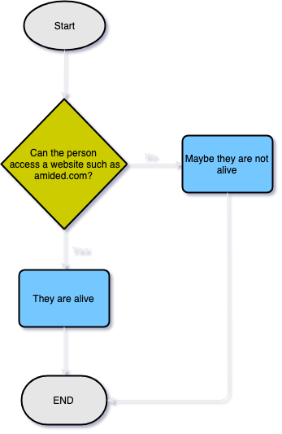

NO
You are still alive
what's this?That is the question everyone wonders at some point in their life, are you dead or alive? Here we leave the philosophy behind it aside to answer that question literally:
No, you are not dead.
Yes, this is just a useless site to tell you whether or not you are dead.
Did you know that most dead people don't actually know they're dead? Roughly 100% of dead people have trouble answering that simple question: Am I dead?. Mostly because their brain doesn't work anymore.
If you are wondering what kind of technology we use to determine if you are dead, it's actually a very advanced algorithm developed by norwegian scientists, explained in the flowchart below:
This was actually inspired in hasthelargehadroncolliderdestroyedtheworldyet.com
If you have more existential questions about life, death, this site, the universe, the afterlife and such, you may find the answers you are looking for in the FAQs page.
No, you are still alive.
Yes...
Yes... Though asking it that way kinda makes me feel bad about it.
Giving any person with existential doubts about their life the answers they desperately search for.
Yes, with 100% refund guarantee!
Uh... You should donate so you can get a refund if you ever need to.
You will die in exactly 42 time units. It's up to you to determine what the units are.
That is not a question.